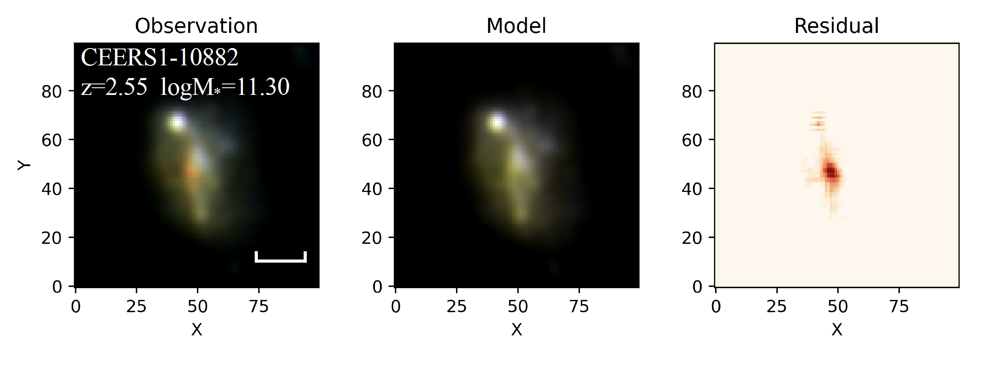
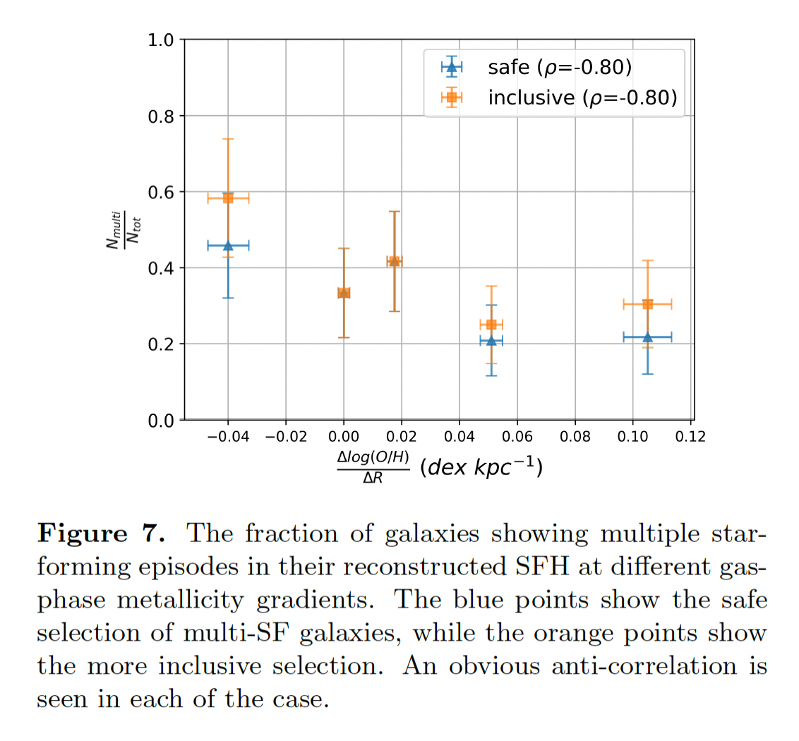
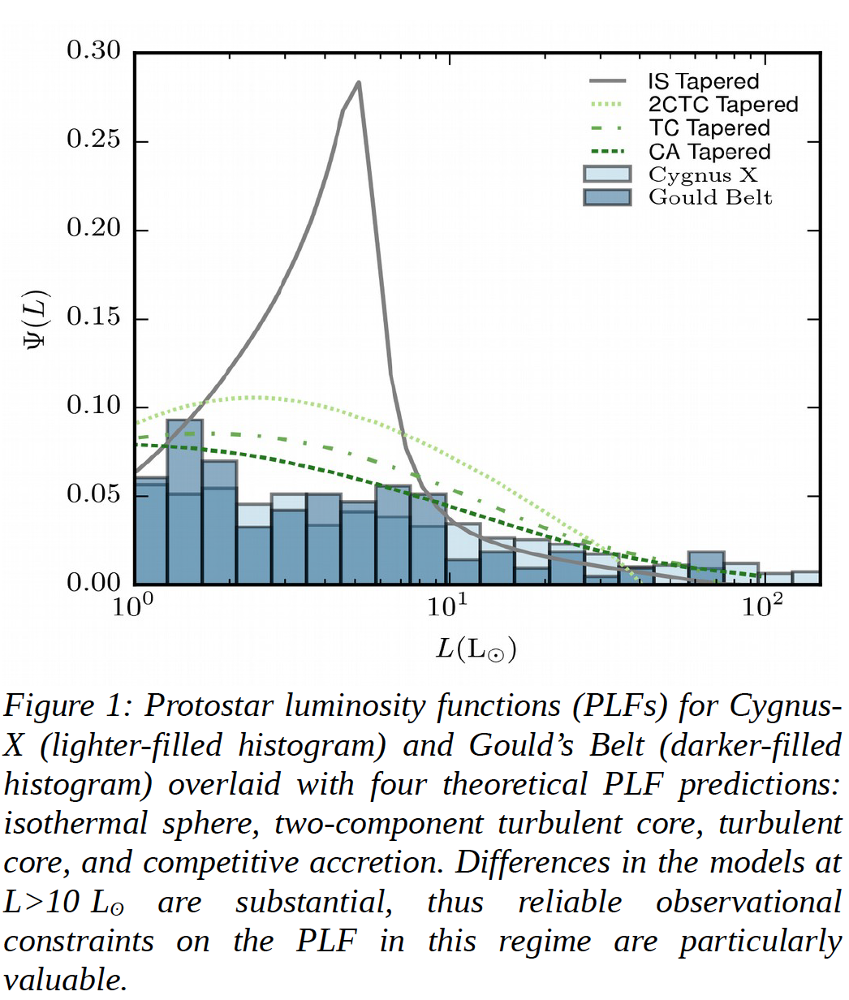
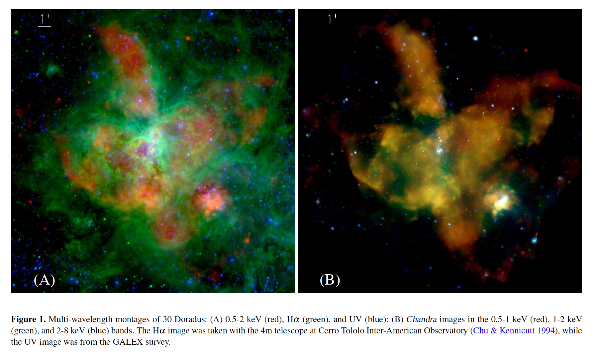
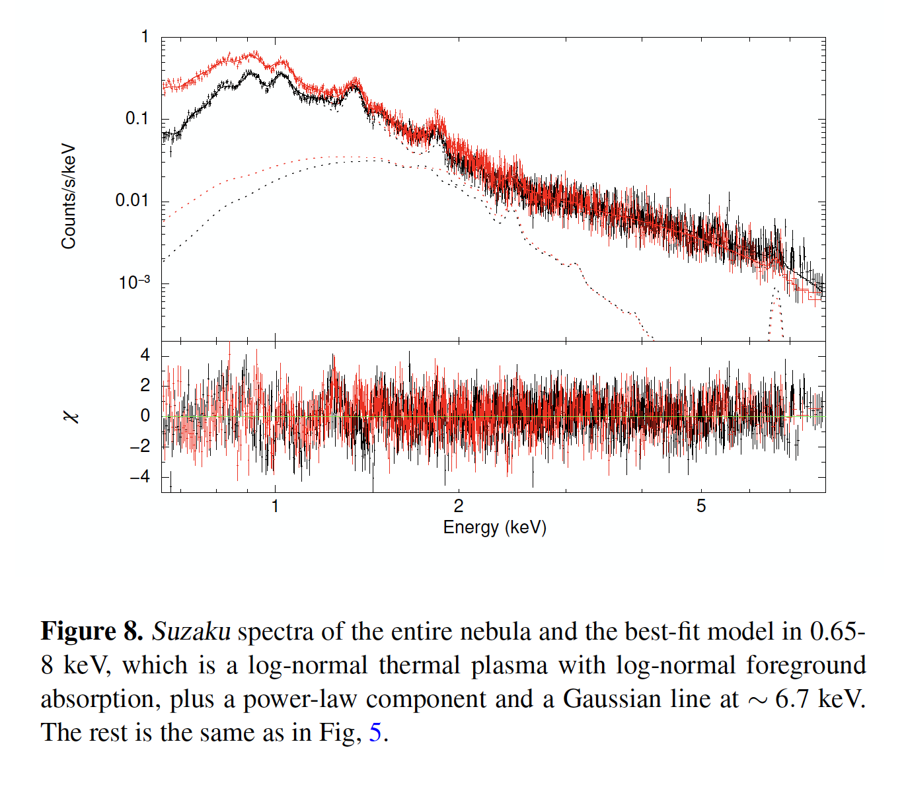

Over the past decade, a population of galaxies invisible in deep optical/near-infrared surveys, but bright at longer wavelengths, has been identified through color selections. These so-called Optical faint/dark galaxies are considered to be highly dust-attenuated massive galaxies at high redshifts. This population, which is entirely obscured by dust, is a relatively rare case of optically-thick obscuration. More generally, many galaxies could have optically-thick substructures due to partially dust obscuration. With the power of JWST imaging, we are able to spatially resolve massive galaxies at z~3, accurately model their spectral energy distributions, and identify candidate optically-thick substructures. We derive the physical properties of those dark substructures and estimate the amount of optically thick obscuration. The relation between the obscured fraction and the star formation history is also discussed.

The RGB image stamp for a candidate galaxy, with F444W in red, F277W in green, and F150W in blue. The third column shows the JWST/NIRCam F444W residual image obtained by observation - model. A 5-kpc scale is labeled.

With data from the HST CLEAR survey, we explore possible relations between the gas-phase metallicity gradients and multiple galaxy properties for 238 star-forming galaxies at 0.6<z<2.6. We reconstruct the non-parametric star formation histories (SFHs) and obtain physical properties of selected galaxies through SED fitting. In general, we find weak or no correlations between the metallicity gradients and most galaxy properties, including the mass-weighted age, recent star formation rate, dust attenuation, and morphology. We find a moderate correlation between the gradients and the ‘evolutionary time’, a temporal metric that characterizes the evolutionary status of a galaxy, with flatter gradients observed in more evolved galaxies. Also, there is evidence that galaxies with multiple star-formation episodes in their SFHs tend to develop more negative gas-phase metallicity gradients (higher [O/H] at the center). We conclude that gas kinematics, e.g. radial inflows and outflows, is likely an important process in setting the gas-phase metallicity gradients, in addition to the evolution of the SFH radial profile.

Cygnus-X is a nearby million-solar-mass star forming complex. Through SOFIA Forcast mid-IR imaging, we are able to clearly identify bright protostar candidates, which suffers confusion and saturation in Spitzer observations. In combination with extant Spitzer data, we are able to complete the high luminosity end of the protostar luminosity function (PLF). The dependence of PLFs on the envoronment will be discussed, as well as the implications on the star formation process.

X-ray observations provide a powerful tool to study starburst feedback, but blocked by the non-isothermality of the diffuse hot plasma and the inhomogeneity of the foreground absorption. Through Suzaku X-ray spectroscopy and log-normal modeling, we measured properties of the 30 Doradus hot plasma and quantitatively confront them with the starburst feedback.

The total thermal energy is smaller than expected from a simple superbubble model, demonstrating that important channels of energy loss are not accounted for. Also, we found tentative evidence for a diffuse non-thermal X-ray component, indicating that cosmic-ray acceleration needs to be considered in such a young starburst region.
X-ray flares are widely detected in gamma-ray burst (GRB) afterglows, featuring short rise and decay times. We analyzed all the GRBs observed by Swift satellite up to 2019 March (600 flares in total).
By fitting the flare light curves, we obtain the frequency distributions of rise times, peak times, decay times, durations, waiting times, energies and peak luminosities. All of them exhibit power-law distributions, and the waiting time can be better described by a non-stationary Poisson process. Flares with longer waiting time tend to be fainter, possess longer durations and reach the peak at a later time, which can be explained by self-organized criticality models.
We present statistics of soft gamma repeater bursts from SGR J1550-5418, SGR 1806-20, and SGR 1900+14. The fluence distributions can be well described by power-law functions, and the waiting time distribution can be described by a non-stationary Poisson process with an exponentially growing occurrence rate. These indicate that magnetar bursts can be regarded as a self-organizing critical process.
The statistical properties of the repeating fast radio burst FRB 121102 are similar with magnetar bursts, combining with the large required magnetic field (B ≥ 10^14 G) of neutron star, indicates that the central engine of FRB 121102 might be a magnetar.